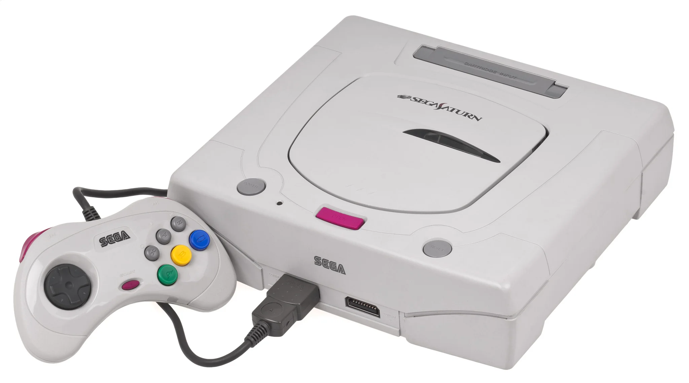
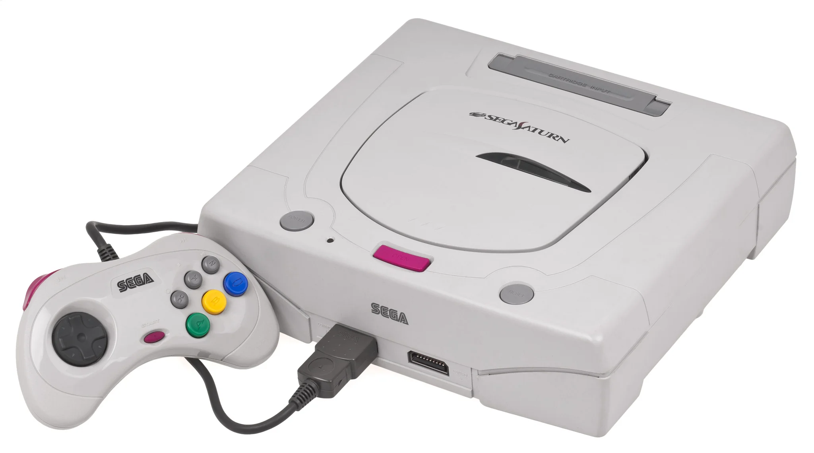

The Sega Saturn is a home video game console developed by
Sega and released on November 22, 1994, in Japan, May 11, 1995, in North
America, and July 8, 1995, in Europe. Part of the fifth generation of
video game consoles, it is the successor to the successful Genesis. The
Saturn has a dual-CPU architecture and eight processors. Its games are
in CD-ROM format, including several ports of arcade games and original
games.
This (in my words) amazing project allow you to manage
your:
playtime,
collection and
love for the
Saturn library!
 
